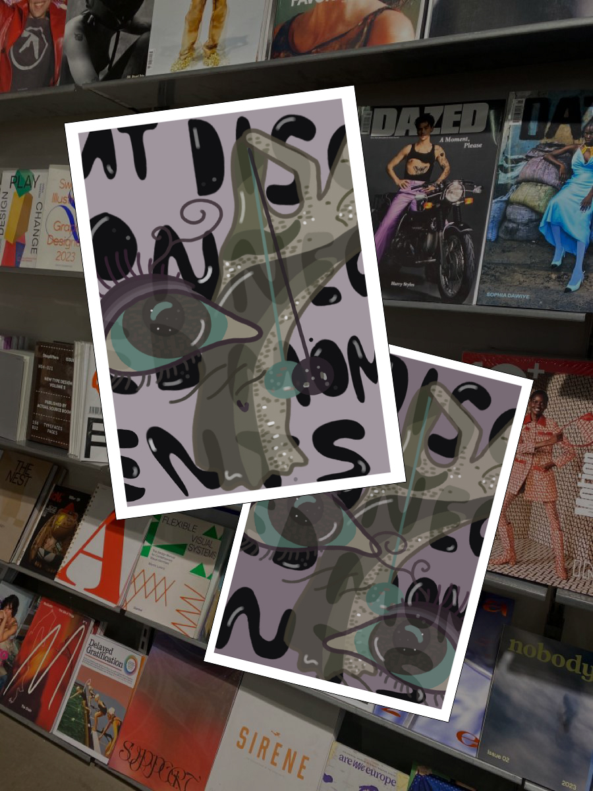
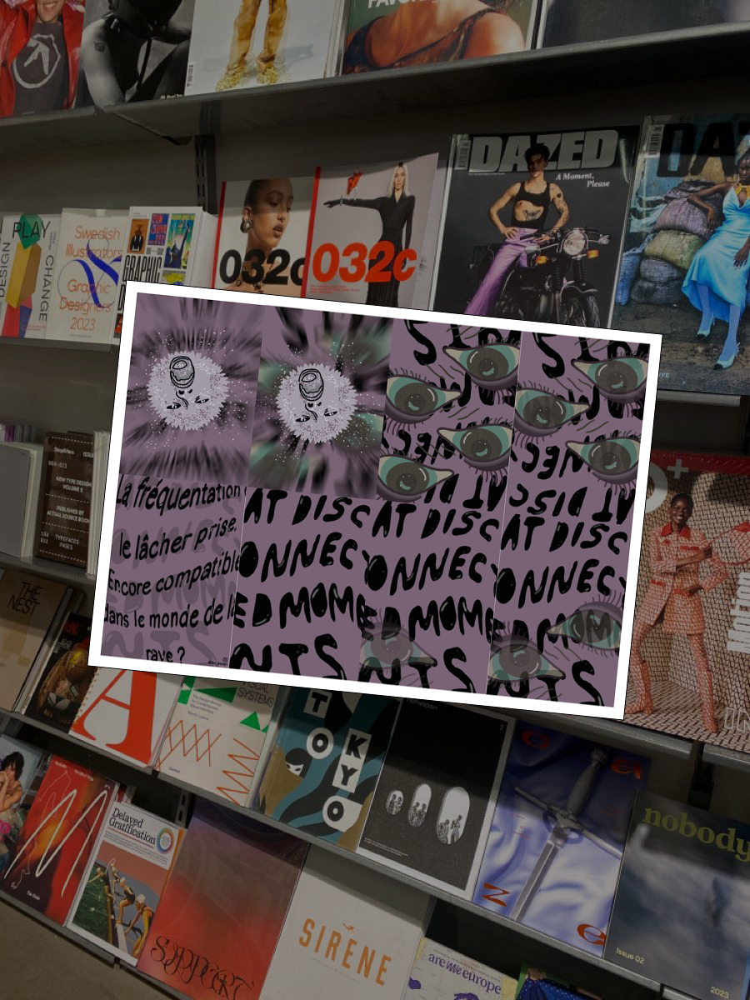

Design engagé · Fanzine
Regard &
Lâcher prise
En rave, on vient pour lâcher prise. Pas pour se sentir épiée. Ce fanzine donne une forme à cette émotion : le moment où le regard des autres prend trop de place et où le lâcher-prise devient vigilance.
Un écrit visuel pour donner forme à une émotion difficile à dire.

Le point de départ
Du lâcher-prise
à la vigilance.
Après des discussions avec des puristes de la techno, une phrase revenait : « les fréquentations ont changé ».
En tant que femme, ce changement peut se ressentir avec une intensité particulière. Là où le jugement ne devrait pas exister, je me sens regardée, jaugée, sollicitée. Le lâcher-prise devient vigilance.
C’est cette émotion précise que j’ai voulu retranscrire dans un fanzine : un écrit visuel qui fait ressentir l’insécurité, plutôt qu’un simple objet à l’esthétique techno.
La traduction graphique
Faire ressentir
par la page.
Une mise en page qui oppresse, puis respire
Le rythme des pages traduit la tension entre le besoin de liberté et la place envahissante du regard des autres.
Des typographies qui se chevauchent
Les lettres se superposent comme des regards insistants, jusqu’à perturber la lecture.
Du grain, du noir et blanc, du texte coupé
La matière et les ruptures visuelles invitent le lecteur à ressentir ce que je ressens.
Entièrement réalisé sur Procreate, ce projet incarne ce que je cherche dans le design social : donner une forme à une émotion qu’on n’arrive pas toujours à dire.

Ouverture
Et l’authenticité
dans tout ça ?
Ce monde va-t-il perdre son authenticité ? Est-ce qu’il ne reste que Berlin pour retrouver ce qu’est vraiment la techno ?
Je n’ai pas la réponse. Mais je sais qu’on est nombreuses à se la poser.